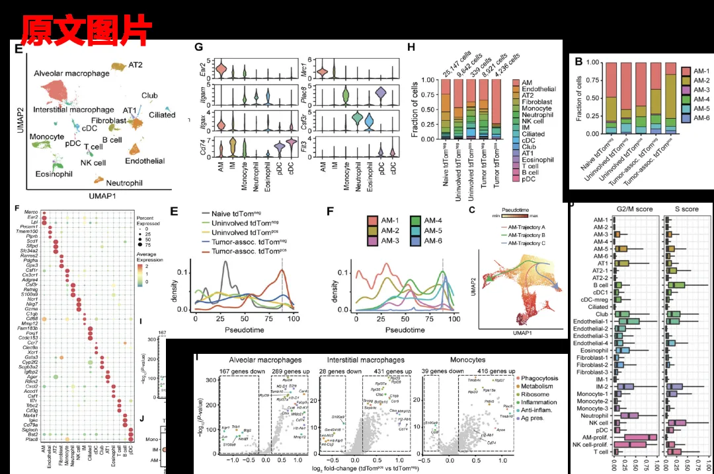
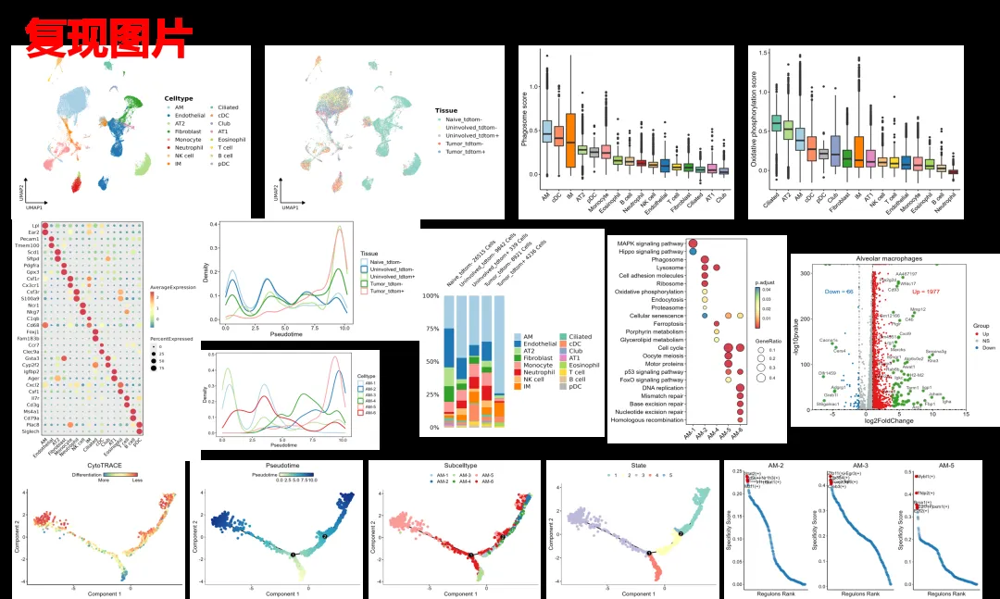
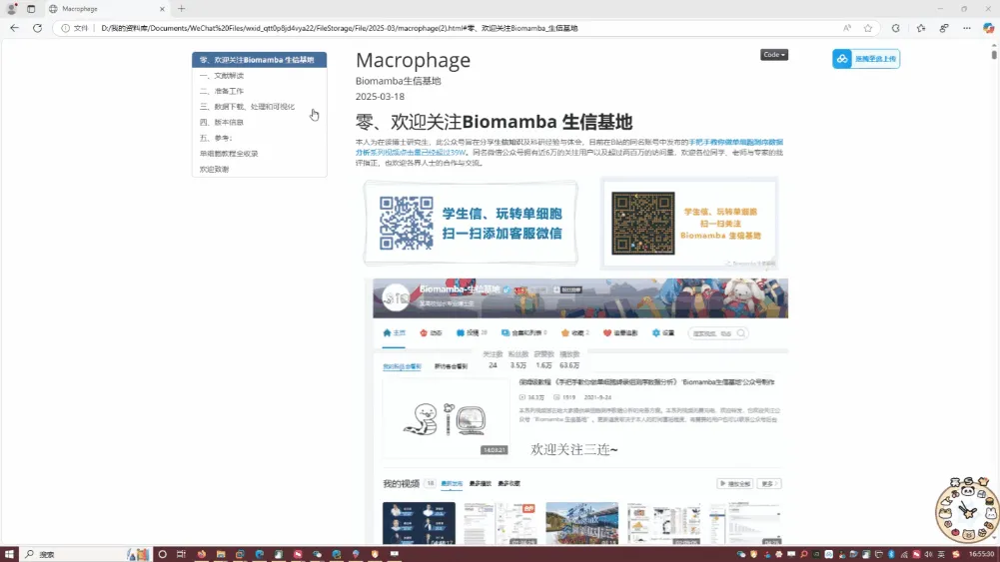
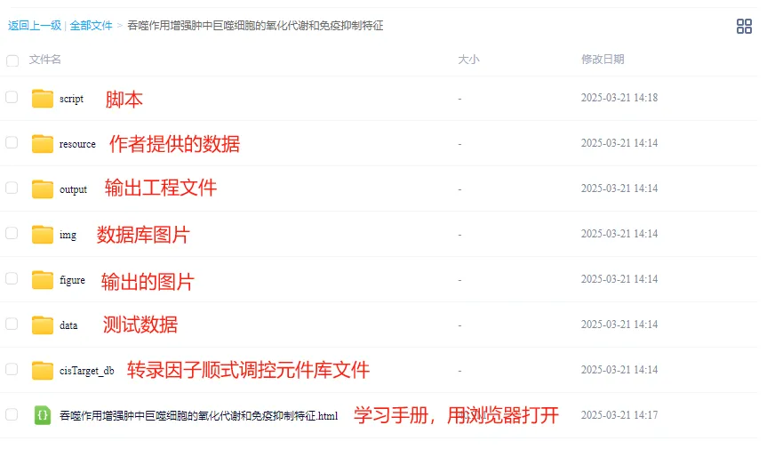

代码复现|吞噬作用增强肿瘤中巨噬细胞的氧化代谢和免疫抑制特征
原文：https://mp.weixin.qq.com/s?__biz=MzAwMzIzOTk5OQ==&mid=2247528686&idx=2&sn=4765a0fa8bc70bf6313e0d5ebe076e4f&chksm=9b3c09beac4b80a8dad7b756f02f4611c1cd03a71aefea41be5ecd95aa38e073d592b435f400#rd 合集：单细胞教程全收录
学习手册

 本次教程中，我们复写了题为"Phagocytosis increases an oxidative metabolic and immune suppressive signature in tumor macrophages "的文章(DOI:https://doi.org/10.1084/jem.20221472)。吞噬作用是巨噬细胞的一项关键功能，但吞噬作用如何塑造实体瘤中的肿瘤相关巨噬细胞 (TAM) 表型和异质性仍不清楚。本文分析了利用同源和新型的本土肺癌模型（其中肿瘤细胞表达荧光团 tdTomato (tdTom)）来识别在体内吞噬肿瘤细胞的TAM，主要发现包括：（1）与tdTom neg TAM相比，吞噬性tdTom pos TAM上调了抗原呈递和抗炎蛋白，但下调了经典促炎效应物。（2）确定了与吞噬作用相关的TAM亚群特异性和常见基因表达变化。（3）发现了一种以氧化磷酸化(OXPHOS)、核糖体和代谢基因为主的吞噬特征，这种特征与人类肺癌的临床结果较差有关。（4）tdTom pos TAM中OXPHOS蛋白的表达、线粒体含量和OXPHOS的功能利用均有所增加。tdTom pos肿瘤中树突状细胞也表现出类似的代谢变化。我们将吞噬性TAM鉴定为一种独特的髓系细胞状态，将体内肿瘤细胞的吞噬作用与OXPHOS和促肿瘤表型联系起来。
本教程基于R语言完成，没有基础的小伙伴可见：R语言入门课回放
本教程基于Linux中的Rstudio环境演示，计算资源不足的同学可参考：
足够支持你完成硕博生涯的生信环境
配置一个心仪的工作站(硬件+环境配置)
独享服务器，生信分析不求人
本次教程中，我们复写了题为"Phagocytosis increases an oxidative metabolic and immune suppressive signature in tumor macrophages "的文章(DOI:https://doi.org/10.1084/jem.20221472)。吞噬作用是巨噬细胞的一项关键功能，但吞噬作用如何塑造实体瘤中的肿瘤相关巨噬细胞 (TAM) 表型和异质性仍不清楚。本文分析了利用同源和新型的本土肺癌模型（其中肿瘤细胞表达荧光团 tdTomato (tdTom)）来识别在体内吞噬肿瘤细胞的TAM，主要发现包括：（1）与tdTom neg TAM相比，吞噬性tdTom pos TAM上调了抗原呈递和抗炎蛋白，但下调了经典促炎效应物。（2）确定了与吞噬作用相关的TAM亚群特异性和常见基因表达变化。（3）发现了一种以氧化磷酸化(OXPHOS)、核糖体和代谢基因为主的吞噬特征，这种特征与人类肺癌的临床结果较差有关。（4）tdTom pos TAM中OXPHOS蛋白的表达、线粒体含量和OXPHOS的功能利用均有所增加。tdTom pos肿瘤中树突状细胞也表现出类似的代谢变化。我们将吞噬性TAM鉴定为一种独特的髓系细胞状态，将体内肿瘤细胞的吞噬作用与OXPHOS和促肿瘤表型联系起来。
本教程基于R语言完成，没有基础的小伙伴可见：R语言入门课回放
本教程基于Linux中的Rstudio环境演示，计算资源不足的同学可参考：
足够支持你完成硕博生涯的生信环境
配置一个心仪的工作站(硬件+环境配置)
独享服务器，生信分析不求人
本教程复现集锦 ：


-Biomamba


所见即所得
学习手册以html文件格式提供，可在浏览器中打开并翻阅学习：

教程目录 ：
一、文献解读
1.0 原文回顾1.1 背景介绍1.2 主要内容 (1)在同基因移植肺肿瘤模型中，吞噬性 TAM 与非吞噬性 TAM 具有不同的表型
(2)组织驻留 AM 是原发性肺癌肿瘤中最常见的吞噬细胞
(3)肿瘤细胞的吞噬作用在单核细胞和巨噬细胞中留下了不同的转录模式
(4)PHAT 基因特征与 OXPHOS 代谢和翻译相关
(5)将 PHAT 特征与其他体内巨噬细胞数据集进行比较，可显示出保守和依赖环境的吞噬巨噬细胞状态
(6)PHAT 基因特征转化为人类 TAM 和肺癌的临床结果
(7)吞噬性 AM 通过与组织重塑相关的独特谱系成熟
(8)吞噬细胞IM与单核细胞不同，吞噬后表现出可塑性
(9)吞噬树突状细胞获得 mregDC 样表型
(10)吞噬性 TAM 增加了线粒体含量、氧消耗和 OXPHOS 相关基因的表达
1.3 复现集锦
二、准备工作
2.1 硬件准备 2.2 单细胞基础
三、数据下载、处理和可视化
3.1 读取数据和信息整理3.2 单细胞数据可视化3.2.1 UMAP图3.2.2 细胞比例3.2.3 提琴图3.2.4 Marker密度图 3.2.5 细胞评分3.2.6 差异表达火山图3.2.7 AM亚群3.2.8 富集分析3.2.9 拟时序分析3.2.10 pySCENIC
四、版本信息
五、 参考
六、单细胞教程全收录****
七、欢迎致谢****
文末下载链接中包含的内容：

测试文件约1.88GB ，大家注意按需下载！
欢迎联系我们领取本推送全部资料~

往期订阅


生信基地现已开放终身订阅，现已包含几十篇订阅资料，未来37年持续更新：那就开放一个终身订阅吧~
2025已更新订阅内容：
《Cell》复现|中性粒细胞scRNA-seq图谱阐明抗肿瘤抗原呈递效力
《Cancer Cell》|时空单细胞揭示CRC的PD-1治疗免疫细胞动态
scRNA-seq数据基础分析手册(2025最新修订)代码复现|吞噬作用增强肿瘤中巨噬细胞的氧化代谢和免疫抑制特征一文学会scRNA Velocity剪切速率分析一文学会四种scRNA-seq轨迹分析

如何联系我们

 留一个领取资料、免费两周学习版服务器的微信号[Biomamba_zhushou]，方便各位随时交流。同时我们也构建了交流群矩阵，欢迎大家入群讨论。
大家可以阅读完这几篇之后添加给生信入门初学者的小贴士
如何搜索公众号过往发布内容
留一个领取资料、免费两周学习版服务器的微信号[Biomamba_zhushou]，方便各位随时交流。同时我们也构建了交流群矩阵，欢迎大家入群讨论。
大家可以阅读完这几篇之后添加给生信入门初学者的小贴士
如何搜索公众号过往发布内容
已有生信基地联系方式的同学无需重复添加
 您点的每个赞和在看，我都认真当成了喜欢
您点的每个赞和在看，我都认真当成了喜欢